Chapter 5 Statistical models in R
5.1 Introduction
In this workshop, we introduce various types of regression models and how they are implemented in R. We cover linear regression, ANOVA, ANCOVA, and mixed effects models for continuous response data, logistic regression binary response data, as well as Poisson and Negative Binomial regression for count response data.
You will learn:
- the different functions used to build a statistical model in R,
- the assumptions behind the different models,
- how the formula object in R is used to specify all the model terms,
- how to interpret the main effects and interaction terms in a model,
- various experimental design concepts that help maximize power.
This is an intermediate workshop series that assumes prior R experience including RStudio projects and the R tidyverse.
5.1.1 Setup instructions
Please come to the workshop with your laptop setup with the required software and data files as described in our setup instructions.
5.1.2 Data description
Unlike our other workshops, ‘Statistical Models’ utilizes several data sets in order to accurately demonstrate the use of statistical tests. You will find more information on each of these data sets in its relevant section(s) within the notes below.
5.1.3 Making an RStudio project
Projects allow you to divide your work into self-contained contexts.
Let’s create a project to work in.
In the top-right corner of your RStudio window, click the “Project: (None)” button to show the projects drop-down menu. Select “New Project…” > “New Directory” > “New Project.” Under directory name, input “statistical_models” and choose a parent directory to contain this project on your computer.
5.1.4 Installing and loading packages
At the beginning of every R script, you should have a dedicated space for loading R packages. R packages allow any R user to code reproducible functions and share them with the R community. Packages exist for anything ranging from microbial ecology to complex graphics to multivariate modeling and beyond.
In this workshop, we will use many different packages. Here, we load the necessary packages which must already be installed (see setup instructions for details).
library(tidyverse) # Easily Install and Load the 'Tidyverse'
library(broom) # Convert Statistical Objects into Tidy Tibbles
library(broomExtra) # Enhancements for 'broom' and 'easystats' Package Families
library(plyr) # Tools for Splitting, Applying and Combining Data
library(lme4) # Linear Mixed-Effects Models using 'Eigen' and S4
library(car) # Companion to Applied Regression
library(lsmeans) # Least-Squares Means
library(MASS) # Support Functions and Datasets for Venables and Ripley's MASS
library(faraway) # Functions and Datasets for Books by Julian Faraway
library(gapminder) # Data from Gapminder
library(HSAUR3) # A Handbook of Statistical Analyses Using R (3rd Edition) # Set global plot theme
theme_set(theme_classic())5.2 Experimental design
5.2.1 Balanced designs
- A balanced design has equal (or roughly equal) number of observations for each group
- Balance eliminates confounding factors and increases power
5.2.2 Blocking factors and random effects
- Blocking factors and random effects should be used/recorded to control sources of variation that exist but are otherwise not of interest
5.2.3 Randomization
- Subjects should be randomized to groups to help balance the unobserved factors in the experiment.
- Randomization should be done in a way to keep the controlled and observational factors (blocking factors and random effects) balanced.
5.3 Analysis of Variance (ANOVA)
ANOVA is used when you have data with:
- a quantitative response/dependent variable (\(Y\)) such as:
- height
- salary
- number of offspring
- one or more categorical explanatory/independent variable(s) (\(X\)’s) such as:
- eye color
- sex
- genotype at a given locus
For example, you would use ANOVA to address questions like:
- Does diet has an effect on weight gain?
- response variable = weight gain (e.g. kg)
- explanatory variable = type of diet (e.g. low vs. medium vs. high sugar)
- Does the type sexual relationship practiced influence the fitness of male Red-winged Blackbirds?
- response variable = fitness of male bird (e.g. # eggs laid)
- explanatory variable = sexual relationship (e.g. monagamy vs. polygamy)
5.3.1 Key assumptions
- ANOVA is robust to the non-normality of sample data
- Balanced ANOVA (equal sample size between groups) is robust to unequal variance
- ANOVA is sensitive to sample independence
5.3.2 The gist of the math
When we run an ANOVA on these data, we calculate a test statistic (F-statistic) that compares the between group variation with the within group variation.
\[F = MSB/MSW\]
where \(MSB\) = Mean Square Between and \(MSW\) = Mean Square Within
Essentially, if there is greater variation between the groups than within the groups we will get a large test statistic value (and correspondingly, a small p-value) and reject that null hypothesis (\(H_0\): population means of all groups are equal).
If you want to delve into ANOVA in more depth, checkout this video tutorial.
5.3.3 1-way ANOVA with 2 groups
Now let’s run some ANOVAs on real data!
There are two perfectly acceptable statistical tests in R that we could apply to compare data in 2 groups. The first, which you may be very familiar with, is the t-test. The second is the topic of our lesson today, Analysis of Variance (or ANOVA). Interestingly, the t-test is really a special case of ANOVA that can be used when only comparing 2 groups. ANOVA is a more generalizable test that we will later see can be used with > 2 groups as well as more than one factor/category column.
5.3.3.1 Load and explore the data
The first experiment we are going to analyze was done to address the question of whether sexual activity effects the longevity of male fruit flies. To assess this, we are going to use a modified version of the fruitfly data from the faraway R package.
Our hypothesis for this experiment are as follows:
Null Hypothesis, \(H_{0}\): Sexual activity has no effect on the population mean longevity of male fruit flies.
Alternative Hypothesis, \(H_{A}\): Sexual activity has an effect on population mean longevity of male fruit flies.
Let’s now load the fruit fly data from the faraway package, and create our categorical groups from the numerical variables. If you are unfamiliar with the functions below, checkout our R tidyverse workshop.
# Read in the data from faraway package
data("fruitfly")
# Create categorical groups and subset data
fruitfly_2groups <- fruitfly %>%
# Convert factors to character variables
mutate_if(is.factor, as.character) %>%
# Create 2-level activity variable
mutate(activity = ifelse(activity %in% c("isolated", "one", "many"), "no", "yes")) %>%
# Create 2-level size variable (for later ANOVA)
mutate(thorax = ifelse(thorax <= 0.8, "short", "long")) %>%
# Subset to equal group sizes for activity and size
group_by(activity, thorax) %>%
sample_n(20)When we explore these data (ignoring thorax data for now)…
# get number of rows and columns
dim(fruitfly_2groups)## [1] 80 3# view first 6 records of data
head(fruitfly_2groups)## # A tibble: 6 x 3
## # Groups: activity, thorax [1]
## thorax longevity activity
## <chr> <int> <chr>
## 1 long 70 no
## 2 long 72 no
## 3 long 75 no
## 4 long 81 no
## 5 long 90 no
## 6 long 96 noWe see that there are 2 columns of interest, longevity and activity. longevity is a quantitative variable, and is our response/dependent variable for this experiment. activity, on the other hand, is a categorical variable, and is our single explanatory/independent variable for this experiment. There are 2 levels to the activity variable, yes and no.
Let’s visualize these data to get some intuition as to whether or not there is a difference in longevity between the male flies that are sexually active and those that are not.
Given that our sample sizes are not too large, the most informative plot we can make are strip plots. We will also add the mean to these:
# plot raw data points for each group as a transparent grey/black point
# overlay mean as a red diamond
ggplot(fruitfly_2groups, aes(x = activity, y = longevity)) +
geom_jitter(position = position_jitter(0.15),
alpha = 0.7) +
stat_summary(fun = mean,
geom = "point",
shape = 18,
size = 4,
color="red") +
xlab("Sexually Active") +
ylab("Longevity (days)")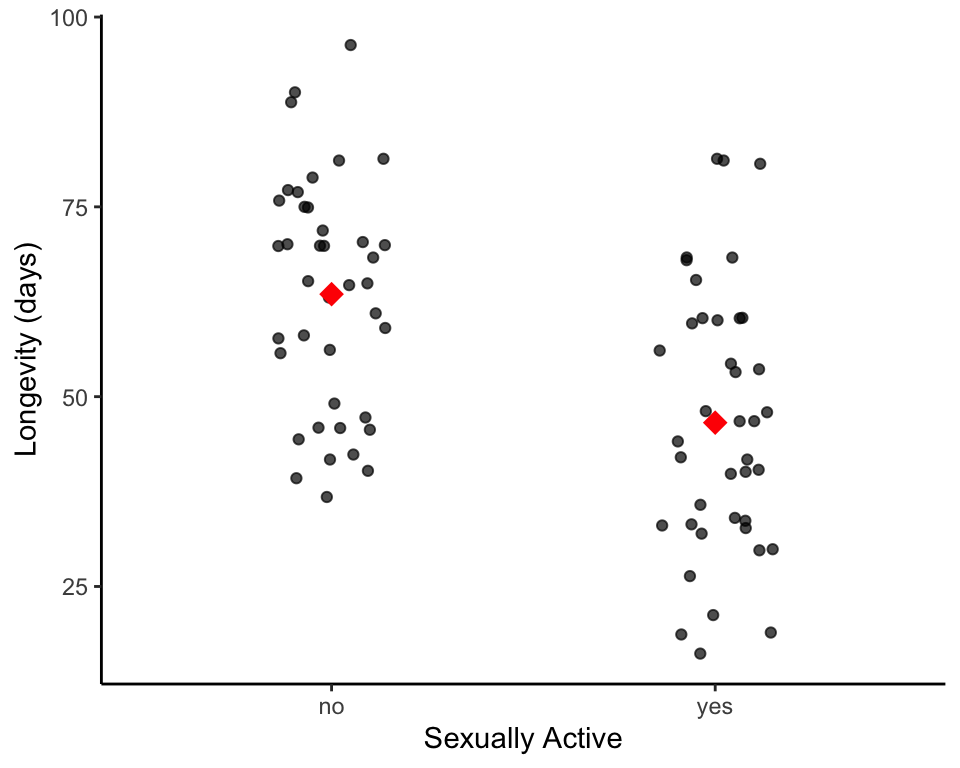
We can see that there is a difference between the mean of these two samples, but what can we say/infer about the population means of these two groups? To say anything meaningful from a statistical standpoint, we need to perform a statistical test that will guide us in rejecting, or failing to reject, our null hypothesis (i.e Sexual activity has no effect on the population mean longevity of male fruit flies).
5.3.4 Formula notation in R
To perform an ANOVA in R, we need to understand R’s formula notation, as this is the first argument we give to the ANOVA function (aov). The formula notation starts with providing the response variable, then a special character, ~, which can be read as “modeled as,” and then the explanatory/independent variable(s). Thus, the formula notation for this experiment is:
longevity ~ activityThe formula notation can get more complex such as including additional explanatory/independent variables or interaction terms. We will introduce these are we attempt more complex analyses later on.
5.3.5 ANOVA in R
To do an ANOVA in R, we will use the aov function. As stated above, the first argument to this is the formula for the experiment/model, and the second argument we must provide is the name of the variable holding our data, here fruitfly_2groups.
The aov function returns us a “model” object, and we need to use another function to see the results of the analysis. I suggest using the tidy function from the broom R package as it returns the results in a nice data frame, that is easy to do further work with. Another, more traditional function to access these data is the summary function, but again, I don’t recommend this as accessing the individual numbers from the output of aov from this model is a bit trickier.
# create an ANOVA "model" object
fruitfly_2groups_model <- aov(longevity ~ activity,
data = fruitfly_2groups)
# view output of aov() as a nice dataframe using tidy() from the broom package
tidy(fruitfly_2groups_model)## # A tibble: 2 x 6
## term df sumsq meansq statistic p.value
## <chr> <dbl> <dbl> <dbl> <dbl> <dbl>
## 1 activity 1 5729. 5729. 21.2 0.0000155
## 2 Residuals 78 21032. 270. NA NASo, what does this output mean? The most important result in regards to rejecting (or failing to reject) our null hypothesis is the p-value. In this simple one-way ANOVA, we have a single p-value which has a very small value of \(1.5515618\times 10^{-5}\). Given that this is much much smaller than the commonly used threshold for rejecting the null hypothesis, p < 0.05, we can reject our null hypothesis that sexual activity has no effect on the population mean longevity of male fruit flies, and accept the alternative hypothesis that sexual activity does has an effect on population mean longevity of male fruit flies.
5.3.5.1 Exercise: 1-way ANOVA
- Using ANOVA, test if fruit fly longevity is effected bt size (as measured by thorax length). What are your null and alternative hypothesis? What can you conclude from these results?
5.3.6 1-way ANOVA with > 2 groups
As mentioned at the start of this section, an ANOVA can be used when there are more than 2 levels in your categorical explanatory/independent variable (unlike a t-test). For example, we will consider the following case:
We are still interested in whether sexual activity effects the longevity of male fruit flies but want to understand this at a finer level (e.g. does the amount of sexual activity matter?). Thus, in this experiment, there are 3 categories for sexual activity. Specifically, males were kept:
none- alonelow- with a new virgin fruit fly every dayhigh- with a new set of eight virgin fruit flies every day
So, for this case, our hypotheses are as follows:
Null Hypothesis, \(H_{0}\): \(\mu_{isolated} = \mu_{low} = \mu_{high}\)
Alternative Hypothesis, \(H_{A}\): at least one group’s population mean differs from that of the other groups
5.3.7 Reload and explore the data
# Create categorical groups and subset data
fruitfly_3groups <- fruitfly %>%
# Convert factors to character variables
mutate_if(is.factor, as.character) %>%
# Create 3-level activity variable
mutate(activity = ifelse(activity %in% c("isolated", "one", "many"), "none", activity)) %>%
# Subset to equal group sizes for activity
group_by(activity) %>%
sample_n(25)Let’s explore these data (again, ignore the thorax variable).
# get number of rows and columns
dim(fruitfly_3groups)## [1] 75 3# view first 6 records of data
head(fruitfly_3groups)## # A tibble: 6 x 3
## # Groups: activity [1]
## thorax longevity activity
## <dbl> <int> <chr>
## 1 0.64 19 high
## 2 0.78 33 high
## 3 0.88 54 high
## 4 0.8 30 high
## 5 0.88 47 high
## 6 0.82 54 highAnd, again as a good practice, let’s visualize the data before we perform our statistical analysis.
# re-order factors to make them show up how we would like them on the plot
# instead of alphabetically (default R behaviour)
fruitfly_3groups$activity <- factor(fruitfly_3groups$activity,
levels = c("none","low","high"))
# plot raw data points for each group as a transparent grey/black point
# overlay mean as a red diamond
ggplot(fruitfly_3groups, aes(x = activity, y = longevity)) +
geom_jitter(position = position_jitter(0.15),
alpha = 0.7) +
stat_summary(fun = mean,
geom = "point",
shape = 18,
size = 4,
color = "red") +
xlab("Sexual Activity") +
ylab("Longevity (days)")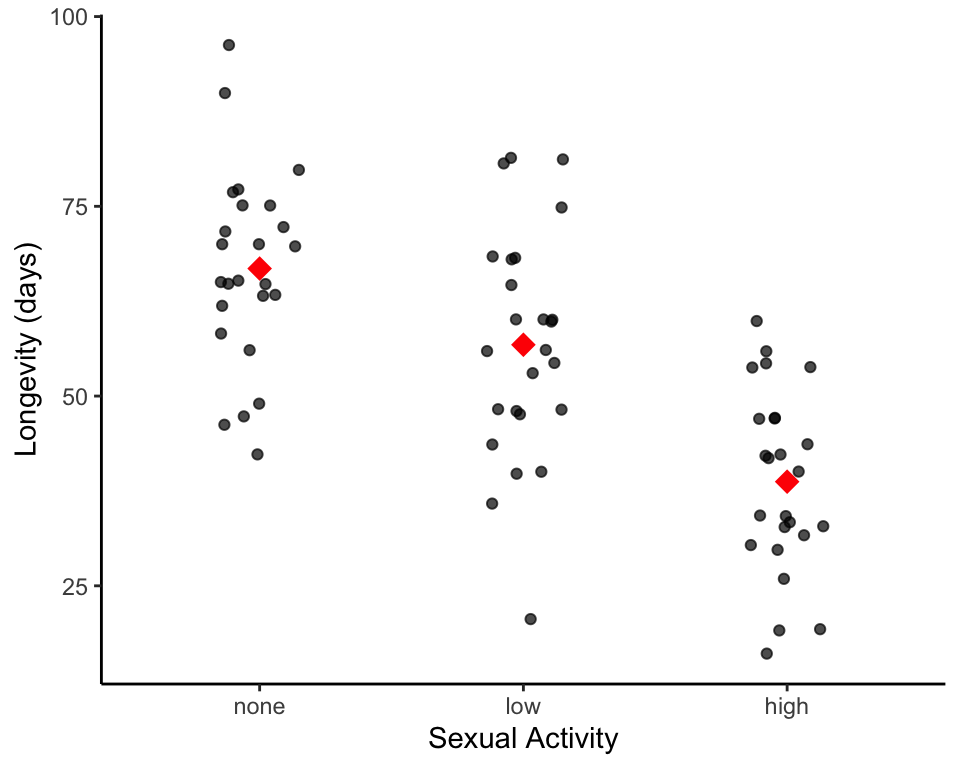
So, it looks the sample means of longevity for both low and high activity are lower than the sample means of the isolated male fruit fly. Are these differences in the sample means indicating that there are differences in the true population means between any of these groups? Again we turn to ANOVA to answer this:
# create an ANOVA "model" object
fruitfly_3groups_model <- aov(longevity ~ activity,
data = fruitfly_3groups)
# view output of aov() as a nice dataframe using tidy() from the broom package
tidy(fruitfly_3groups_model)## # A tibble: 2 x 6
## term df sumsq meansq statistic p.value
## <chr> <dbl> <dbl> <dbl> <dbl> <dbl>
## 1 activity 2 10123. 5061. 28.3 8.48e-10
## 2 Residuals 72 12872. 179. NA NASo, what does this output mean? Similar to a 1-way, 2 group ANOVA, we look at the p-value to determine if we reject (or fail to reject) our null hypothesis. In this case, we have a single p-value which has a very small value of \(8.4803266\times 10^{-10}\). Given that this is much much smaller than the commonly used threshold for rejecting the null hypothesis, p < 0.05, we can reject our null hypothesis that all the population mean for longevity of male fruit flies is equal between all groups, and accept the alternative hypothesis that at least one group’s population mean differs from that of the other groups.
But which one(s) differ?
5.3.8 Assess which groups differ
This is something ANOVA alone cannot tell us. To answer this, we need to either perform pair-wise t-tests (followed by an adjustment or correction for multiple comparisons, such as a Bonferroni correction, or False Discovery Rate) OR follow the ANOVA with a contrast-test, such as Tukey’s honestly significant difference (HSD) test. We’ll do both here, and show that we get similar results:
# pairwise t-tests to observe group differences
tidy(pairwise.t.test(fruitfly_3groups$longevity,
fruitfly_3groups$activity,
p.adjust.method = "bonferroni",
pool.sd = TRUE,
paired = FALSE))## # A tibble: 3 x 3
## group1 group2 p.value
## <chr> <chr> <dbl>
## 1 low none 2.93e- 2
## 2 high none 5.42e-10
## 3 high low 2.81e- 5# Tukey's HSD test to observe group differences
tidy(TukeyHSD(fruitfly_3groups_model, "activity"))## # A tibble: 3 x 7
## term contrast null.value estimate conf.low conf.high adj.p.value
## <chr> <chr> <dbl> <dbl> <dbl> <dbl> <dbl>
## 1 activity low-none 0 -10.0 -19.1 -0.990 2.61e- 2
## 2 activity high-none 0 -28.1 -37.1 -19.0 4.56e-10
## 3 activity high-low 0 -18.0 -27.1 -8.99 2.76e- 5From both of these multiple comparison tests, we see that there is no significant difference between the population mean longevity of male fruit flies who had no or little sexual activity. However, high sexual activity does appear to matter, as the population mean longevity of male fruit flies who had high sexual activity is significantly different from that of male flies who had either no or low sexual activity.
5.3.9 2-way ANOVA with 2 groups
Let’s continue to add complexity to our ANOVA model. In this experiment, we not only interested in how sexual activity might effect longevity; we are also interested in body size (assessed via thorax length). We do this because the literature indicates body size affects fruit fly longevity. Thus, now we have two categories/explanatory variables to look at sexual activity (back to our first version with levels no and yes) and thorax length (with levels short and long).
For this experiment, we have two sets of null and alternative hypotheses:
Hypotheses for sexual activity
Null Hypothesis, \(H_{0}\): \(\mu_{No} = \mu_{Yes}\)
Alternative Hypothesis, \(H_{A}\): \(\mu_{No} \ne \mu_{Yes}\)
Hypotheses for thorax length
Null Hypothesis, \(H_{0}\): \(\mu_{short} = \mu_{long}\)
Alternative Hypothesis, \(H_{A}\): \(\mu_{short} \ne \mu_{long}\)
Now that we have our case setup, let’s re-look at our 2 level data but now notice the thorax information.
# get number of rows and columns
dim(fruitfly_2groups)## [1] 80 3# view first 6 records of data
head(fruitfly_2groups)## # A tibble: 6 x 3
## # Groups: activity, thorax [1]
## thorax longevity activity
## <chr> <int> <chr>
## 1 long 70 no
## 2 long 72 no
## 3 long 75 no
## 4 long 81 no
## 5 long 90 no
## 6 long 96 noNext, let’s plot these data.
# re-order factors to make them show up how we would like them on the plot
# instead of alphabetically (default R behaviour)
fruitfly_2groups$thorax <- factor(fruitfly_2groups$thorax,
levels = c("short","long"))
# plot strip charts of longevity, grouped by sexual activity
# and colored by thorax length
ggplot(fruitfly_2groups,
aes(x = activity, y = longevity, color = thorax)) +
stat_summary(fun = mean,
geom = "point",
shape = 5,
size = 4,
position = position_dodge(0.5)) +
geom_jitter(position = position_dodge(0.5), alpha = 0.3) +
scale_color_manual(values=c("black", "dodgerblue3")) +
xlab("Sexual Activity") +
ylab("Longevity (days)")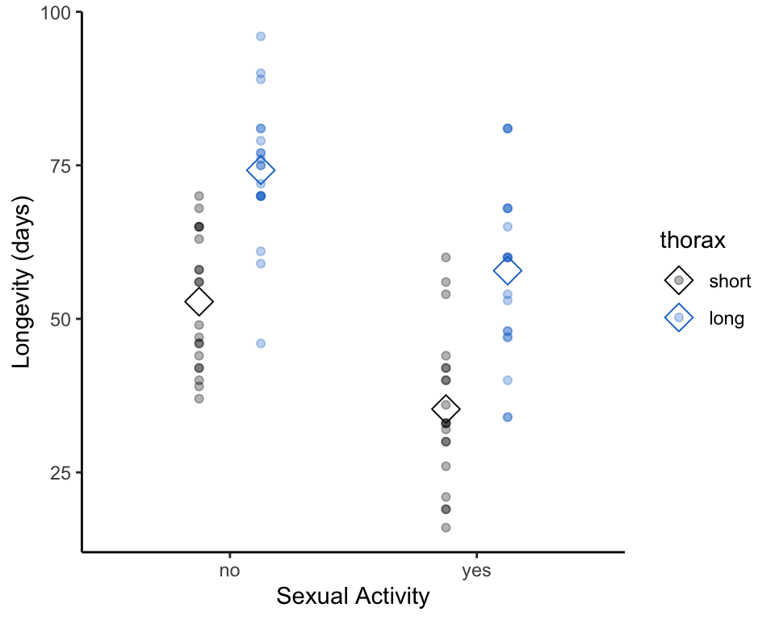
This data visualization suggests that both sexual activity and body size/thorax length may effect longevity. Let’s confirm (or disprove) this intuition by performing a 2-way (or 2-factor) ANOVA.
To perform a 2-way ANOVA, we modify the formula notation that we pass into to aov function by adding an additional factor/category/explanatory variable through the use of the + sign and the name of the new variable. Thus, our formula for this case is:
longevity ~ activity + thoraxEverything else remains the same:
# create an ANOVA "model" object
fruitfly_2var_model <- aov(longevity ~ activity + thorax,
data = fruitfly_2groups)
# view output of aov() as a nice dataframe using tidy() from the broom package
tidy(fruitfly_2var_model)## # A tibble: 3 x 6
## term df sumsq meansq statistic p.value
## <chr> <dbl> <dbl> <dbl> <dbl> <dbl>
## 1 activity 1 5729. 5729. 38.8 2.31e- 8
## 2 thorax 1 9658. 9658. 65.4 6.94e-12
## 3 Residuals 77 11374. 148. NA NANow, we see that we get back an additional line in our results summary that corresponds to the hypotheses regarding the effect of body size/thorax length on longevity. The p-values for both sexual activity (\(2.3099823\times 10^{-8}\)) and size (\(6.9440175\times 10^{-12}\)) are very, very small. Thus, we can reject both of our null hypotheses and infer that both sexual activity and size have statistically significant effect on longevity.
5.3.10 2-way ANOVA with 2 groups including an interaction term
Oftentimes when we are dealing with experiments/cases where we have 2 or more factor/category/explanatory variables, we first want to ask if there is an interaction effect between them and their influences/effects on the response variable.
What do we mean by interaction effect? Essentially, an interaction effect is observed when the effect of two explanatory variables on the response variable is not additive (for example, their effect could instead be synergistic).
Our hypotheses for whether or not there is an interaction are:
Null Hypothesis, \(H_{0}\): There is no interaction effect between sexual activity and thorax length on the mean longevity of the population.
Alternative Hypothesis, \(H_{A}\): There is an interaction effect between sexual activity and thorax length on the mean longevity of the population.
In a simple case, as presented in this experiment, we first assess the hypotheses in regards to the presence or absence of interaction. If we reject the interaction effect null hypothesis, then we interpret the data only in regards to this null hypothesis. If we fail to reject the interaction effect null hypothesis, then we can proceed and investigate/test the hypotheses for each individual factor/category/explanatory variable (often referred to as “main effects”).
Can we get an intuitive sense for this via visualization? Yes we can by making an interaction plot (see example below). Here, we are looking at the slope of the lines that connects the means. If the slopes of the interaction lines are parallel, then the ANOVA results will very likely tell us that we will fail to reject the interaction effect null hypothesis. On the other hand, if they are not parallel, the ANOVA results will very likely tell us to reject the interaction effect null hypothesis, and we can infer that there is an interaction effect on the response variable between the two factor/category/explanatory variables.
Let’s look at the interaction plot for our case:
# plot to investigate possible interaction effect of sexual
# activity and thorax length on longevity
ggplot(fruitfly_2groups,
aes(x = activity, y = longevity, color = thorax)) +
stat_summary(fun = mean,
geom = "point",
shape = 18,
size = 3) +
stat_summary(fun = mean,
geom = "line",
aes(group = thorax)) +
scale_color_manual(values=c("black", "dodgerblue3")) +
xlab("Sexual Activity") +
ylab("Longevity (days)")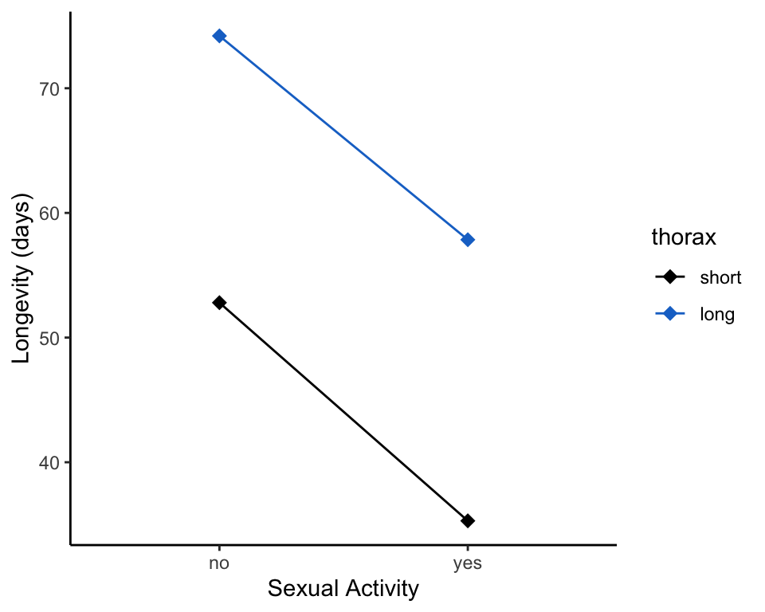
Although not perfectly parallel, the lines on the interaction plot are pretty close to parallel. So, the ANOVA results will very likely tell us that we will fail to reject the interaction effect null hypothesis. Let’s proceed with the analysis to be sure.
One way to include an interaction term in your ANOVA model is to use the * symbol between two factor/category/explanatory variables. This causes R to test the null hypotheses for the effect of each individual factor/category/explanatory variables as well as the combined effect of these two explanatory variables. Thus, for us, our formula notation is now:
longevity ~ activity * thoraxImportantly, using * causes R to test all possible interactions. So if we had a formula A * B * C, it would test all combinations of the 3 variables. If instead, you want to specify specific interaction term(s), you can use :. In the case of our formula, this is the same as * but serves as an example of the other notation type.
longevity ~ activity + thorax + activity:thoraxEverything else about our input aov remains the same as our previous model.
# create an ANOVA "model" object
fruitfly_2var_model2 <- aov(longevity ~ activity * thorax,
data = fruitfly_2groups)
# view output of aov() as a nice dataframe using tidy() from the broom package
tidy(fruitfly_2var_model2)## # A tibble: 4 x 6
## term df sumsq meansq statistic p.value
## <chr> <dbl> <dbl> <dbl> <dbl> <dbl>
## 1 activity 1 5729. 5729. 38.3 2.83e- 8
## 2 thorax 1 9658. 9658. 64.6 9.41e-12
## 3 activity:thorax 1 6.61 6.61 0.0442 8.34e- 1
## 4 Residuals 76 11367. 150. NA NAAs stated above, as a rule of thumb for cases such as these, the first hypotheses we should attend to are those regarding the interaction effect (or lack thereof). We can see our output from ANOVA now has an additional line that refers to the testing of the interaction effect hypothesis.
\(activity:thorax, 1, 6.6125, 6.6125, 0.0442107, 0.8340247\)
We observe that the p-value from this line is not very small, \(0.8340247\), and not less than the standard p-value threshold for rejecting null hypotheses (0.05). Thus, as our interaction plot suggested, we fail to reject the null hypotheses and conclude that there is no interaction effect between sexual activity and thorax length on the mean longevity of the population).
We would then proceed to investigate the hypotheses of each main effect independently. This could be done by either interpreting the relevant p-values from our current ANOVA results table, or re-running the analysis without the interaction term (as done in the previous case).
5.3.10.1 Exercise: ANOVA
Determine whether the following statements are true or false?
ANOVA tests the null hypothesis that the sample means are all equal?
We use ANOVA to compare the variances of the population?
A one-way ANOVA is equivalent to a t-test when there are 2 groups to be compared.
In rejecting the null hypothesis, one can conclude that all the population means are different from one another?
Questions courtesy of Dr. Gabriela Cohen Freue’s DSCI 562 course (UBC)
If you are attending a 3 x 2-hour workshop, this is the end of day 1
5.4 Linear regression
5.4.1 Load and explore the data
Now, we will work with a data frame that Jennifer Bryan (U. of British Columbia, RStudio) put together in the gapminder package.
Unlike the fruit fly data, no pre-manipulation is needed so let’s view these data as is.
gapminder## # A tibble: 1,704 x 6
## country continent year lifeExp pop gdpPercap
## <fct> <fct> <int> <dbl> <int> <dbl>
## 1 Afghanistan Asia 1952 28.8 8425333 779.
## 2 Afghanistan Asia 1957 30.3 9240934 821.
## 3 Afghanistan Asia 1962 32.0 10267083 853.
## 4 Afghanistan Asia 1967 34.0 11537966 836.
## 5 Afghanistan Asia 1972 36.1 13079460 740.
## 6 Afghanistan Asia 1977 38.4 14880372 786.
## 7 Afghanistan Asia 1982 39.9 12881816 978.
## 8 Afghanistan Asia 1987 40.8 13867957 852.
## 9 Afghanistan Asia 1992 41.7 16317921 649.
## 10 Afghanistan Asia 1997 41.8 22227415 635.
## # … with 1,694 more rowsWe see that the data contain information on life expectancy (lifeExp), population (pop), and gross domestic product per capita (gdpPercap, a rough measure of economical richness) for many countries across many years.
A very naive working hypothesis that you may come to is that our life expectancy grew with time. This would be represent in r with lifeExp ~ year.
We can explore this hypothesis graphically.
gapminder %>%
ggplot(aes(x = year, y = lifeExp)) +
geom_point() +
labs(y="Life expectancy (yrs)")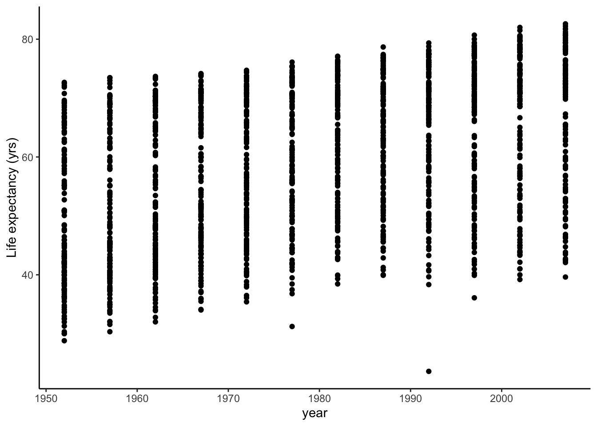
Although there is very high variance, we do see a certain trend with mean life expectancy increasing over time.
Similarly, we can naively hypothesize that life expectancy is higher where the per-capita gdp is higher. In R, this is lifeExp ~ gdpPercap.
gapminder %>%
ggplot(aes(x = gdpPercap, y = lifeExp)) +
geom_point() +
labs(y="Life expectancy (yrs)", x="Per-capita GDP")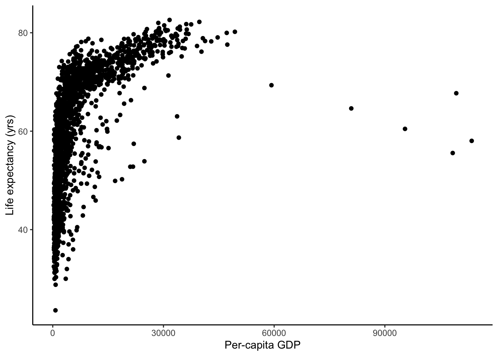
5.4.2 Linear models
A linear regression model describes the change of a dependent variable, say lifeExp, as a linear function of one or more explanatory variables, say year. This means that increasing by \(x\) the variable year will have an effect \(\beta \cdot x\) on the dependent variable lifeExp, whatever the value \(x\) is. In mathematical terms:
\[
\mbox{lifeExp} = \alpha + \beta \cdot \mbox{year}
\]
We call \(\alpha\) the intercept of the model, or the value of lifeExp when year is equal to zero. When we go forward in time, increasing year, lifeExp increases (if \(\beta\) is positive, otherwise it decreases):
\[
\alpha + \beta \cdot \left(\mbox{year} + x \right) = \alpha + \beta \cdot \mbox{year} + \beta \cdot x = \mbox{lifeExp} + \beta \cdot x
\]
5.4.3 Key assumptions
number of assumptions must be satisfied for a linear model to be reliable. These are:
- the predictor variables should be measured with not too much error (weak exogeneity)
- the variance of the response variable should be roughly the same across the range of its predictors (homoscedasticity, a fancy pants word for “constant variance”)
- the discrepancies between observed and predicted values should be independent
- the predictors themselves should be non-colinear (a rather technical issues, given by the way we solve the model, that may happen when two predictors are perfectly correlated or we try to estimate the effect of too many predictors with too little data).
Here, we only mention these assumptions, but for more details, take a look at wiki.
When we have only one predictive variable (what is called a simple linear regression model), the formula we just introduced describes a straight line. The task of a linear regression method is identifying the best fitting slope and intercept of that straight line. But what does best fitting means in this context? We will first adopt a heuristic definition of it but will rigorously define it later on.
Let’s consider a bunch of straight lines in our first plot:
gapminder %>%
ggplot(aes(x = year, y = lifeExp)) +
geom_point() +
geom_abline(intercept = 0, slope = 0.033, colour = "green") +
geom_abline(intercept = -575, slope = 0.32, colour = "purple") +
geom_hline(aes(yintercept = mean(lifeExp)), colour = "red") +
geom_vline(aes(xintercept = mean(year)), colour = "blue") +
labs(y="Life expectancy (yrs)")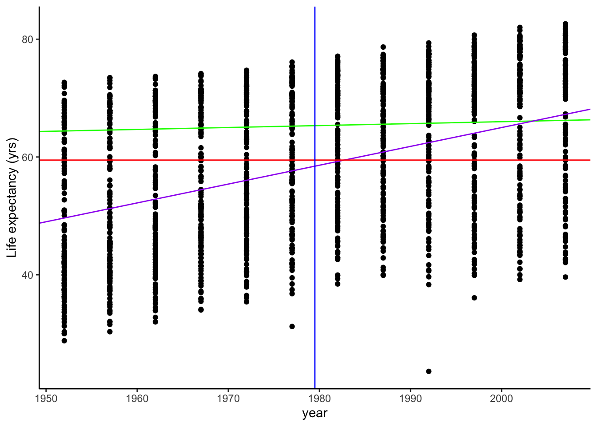
So, which line best describes the data? To determine this, we must fit a linear model to the data.
5.4.4 Simple linear regression
To obtain the slope and intercept of the green line, we can use the built-in R function lm(). This function works very similarly to the aov function we used earlier in that we must give it a model and data. The output of lm() is also messy but we want to use summary instead of tidy in order to see all the relevant results.
# create a lm "model" object
lifeExp_model1 <- lm(lifeExp ~ year,
data = gapminder)
# view output of lm() as using summary()
summary(lifeExp_model1)##
## Call:
## lm(formula = lifeExp ~ year, data = gapminder)
##
## Residuals:
## Min 1Q Median 3Q Max
## -39.949 -9.651 1.697 10.335 22.158
##
## Coefficients:
## Estimate Std. Error t value Pr(>|t|)
## (Intercept) -585.65219 32.31396 -18.12 <2e-16 ***
## year 0.32590 0.01632 19.96 <2e-16 ***
## ---
## Signif. codes: 0 '***' 0.001 '**' 0.01 '*' 0.05 '.' 0.1 ' ' 1
##
## Residual standard error: 11.63 on 1702 degrees of freedom
## Multiple R-squared: 0.1898, Adjusted R-squared: 0.1893
## F-statistic: 398.6 on 1 and 1702 DF, p-value: < 2.2e-16Now, however, we are interested in more than just the p-value.
The Estimate values are the best fit for the intercept, \(\alpha\), and the slope, \(\beta\). The slope, the parameter the links year to lifeExp, is a positive value: every 1 year, the life expectancy increases of \(0.3259038\) years. This is in line with our hypothesis. Moreover, its p-value, the probability of finding a correlation at least as strong between predictive and response variable, is rather low at \(7.5467946\times 10^{-80}\) (but see this for a cautionary tale about p-values!).
Using this slope and intercept, we can plot this best fit line on our data.
gapminder %>%
ggplot(aes(x = year, y = lifeExp)) +
geom_point() +
geom_smooth(method = "lm", se = FALSE, colour = "green") +
labs(y="Life expectancy (yrs)")## `geom_smooth()` using formula 'y ~ x'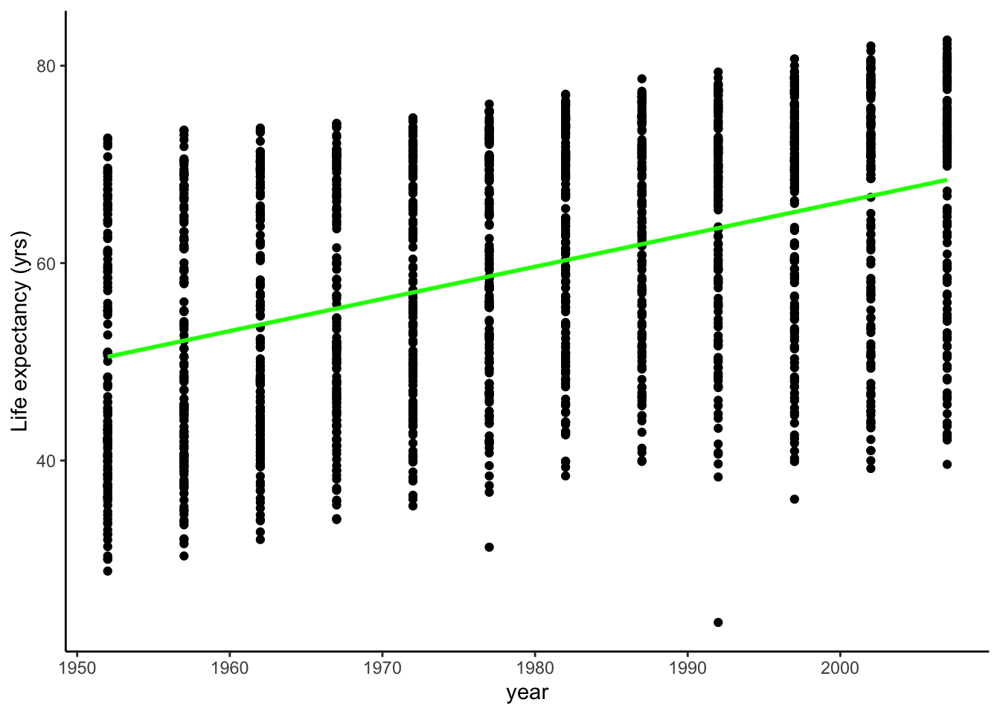
Another important bit of information in our results is the R-squared values, both are the Multiple and Adjusted R-squared. These tell us how much of variance in the life expectancy data is explained by the year. In this case, not much (0.1897571, 0.1892811, respectively)
5.4.5 Residuals
We can further explore our linear model by plotting some diagnostic plots. Base R provides a quick and easy way to view all of these plots at once with plot.
# Set plot frame to 2 by 2
par(mfrow=c(2,2))
# Create diagnostic plots
plot(lifeExp_model1)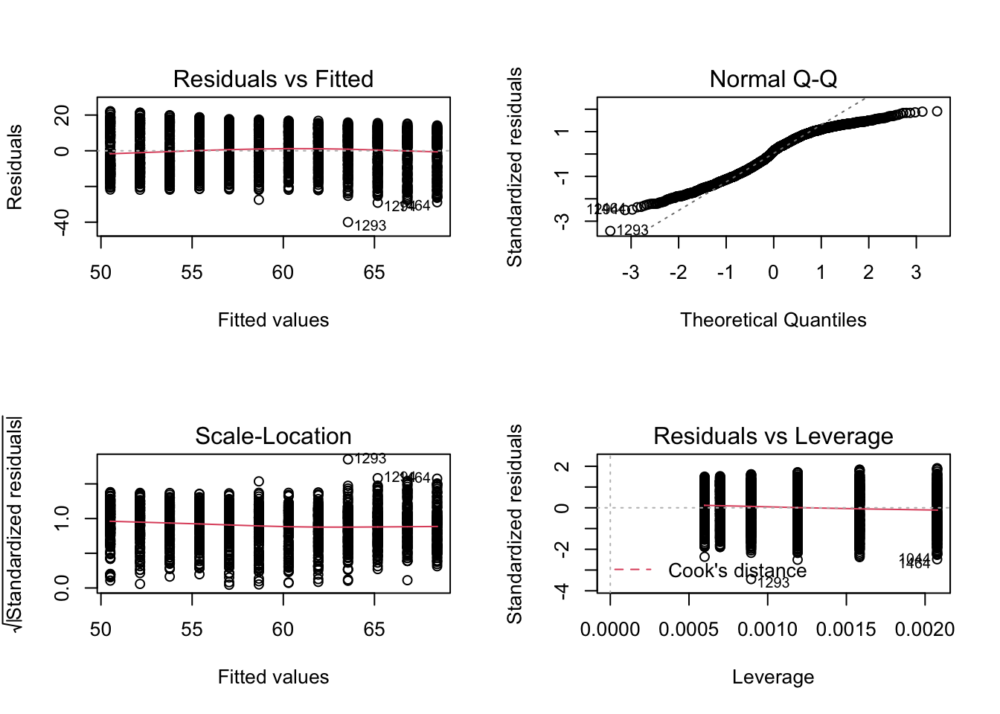
Whoa right?! Let’s break it down. Overall, these diagnostic plots are useful for understanding the model residuals. The residuals are the discrepancies between the life expectancy we would have guessed by the model and the observed values in the available data. In other words, the distances between the straight line and actual data points. In a linear regression model, these residuals are the values we try to minimize when we fit the straight line.
There is a lot of information contained in these 4 plots, and you can find in-depth explanations here. For our purposes today, let’s focus on just the Residuals vs Fitted and Normal Q-Q plots.
The Residuals vs Fitted plot shows the differences between the best fit line and all the available data points. When the model is a good fit for the data, this plot should have no discernible pattern. That is, the red line should not form a shape like an ‘S’ or a parabola. Another way to look it is that the points should look like ‘stars in the sky,’ e.g. random. This second description is not great for these data since year is an integer (whole number) but we do see that the red line is relatively straight and without pattern.
The Normal Q-Q plot directly compares the best fit and actual data values. A good model closely adheres to dotted line and points that fall off the line should not portray any pattern. In our case, this plot indicates that this simple linear model may not be the best fit for these data. Notice how either end deviates more and more from the line and the plot forms somewhat of an ‘S’ pattern.
These ends are particularly important in a linear model. Because we’ve chosen to use a simple linear model, outliers, or observed values that are very far away from our best fit line, are very important (in jargon, they have a high leverage, see the fourth diagnostic plot). This is especially true if the outliers are at the edge of the predicting variable ranges such as we see in our Q-Q plot.
5.4.5.1 Exercise: Linear models
Looking at the summary plots above, do you feel that our model can be extrapolated to a much wider
yearrange? Why or why not?Fit a linear model of life expectancy as a function of per-capita gdp. Using the summary table and diagnostic plots, discuss whether or not you think this is a good fit for these data.
If you are attending a 2 x 3-hour workshop, this is the end of day 1
5.5 Cautions when using linear models
R (and most other statistical software) will fit, plot, summarize, etc. a linear model regardless of whether that model is a good fit for the data.
For example, the Anscombe data sets are very different data that give the same slope, intercept, and mean in a linear model.
We can access these data in R and format them with
absc <- with(datasets::anscombe,
tibble(X=c(x1,x2,x3,x4),
Y=c(y1,y2,y3,y4),
anscombe_quartet=gl(4,nrow(datasets::anscombe))
)
)Plotting these data reveals the problem.
absc %>%
ggplot(aes(x=X,y=Y,group=anscombe_quartet)) +
geom_point() +
geom_smooth(method = "lm", se = FALSE) +
scale_x_continuous(limits = c(0,20)) +
facet_wrap(~anscombe_quartet)## `geom_smooth()` using formula 'y ~ x'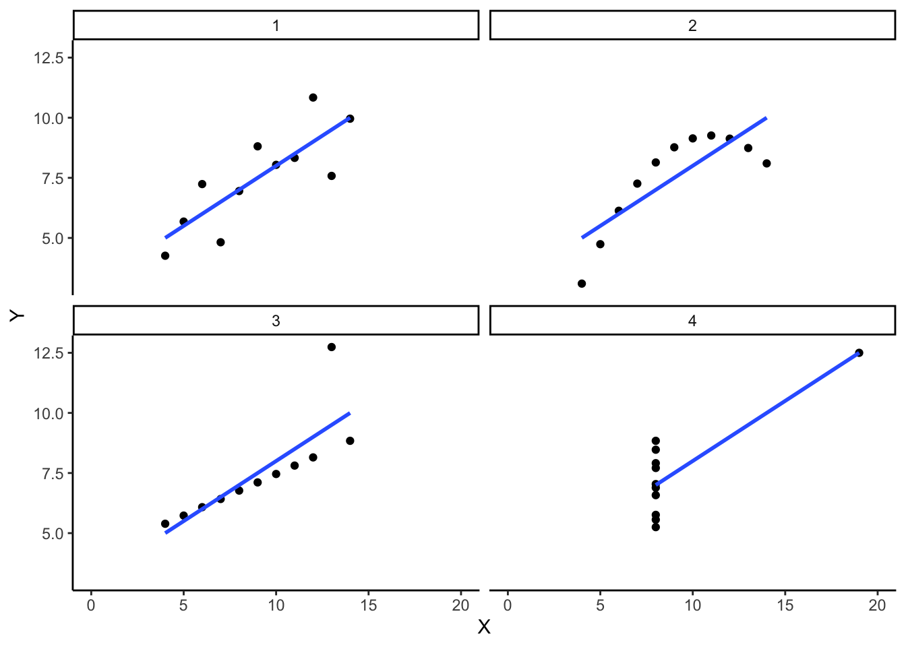
This is why you should always, always, always plot your data before attempting regression!
5.6 Multiple linear regression
So far, we have dealt with simple regression models, where we had only one predictor variable. However, lm() handles much more complex models. Consider for example a model of life expectancy as a function of both the year and the per-capita gdp.
lifeExp ~ year + gdpPercap## lifeExp ~ year + gdpPercapThis formula does not describe a straight line anymore, but a plane in a 3D space. Still a very flat thingy.
Let’s fit this model.
# create a lm "model" object
lifeExp_model2 <- lm(lifeExp ~ year + gdpPercap,
data = gapminder)
# view output of lm() as using summary()
summary(lifeExp_model2)##
## Call:
## lm(formula = lifeExp ~ year + gdpPercap, data = gapminder)
##
## Residuals:
## Min 1Q Median 3Q Max
## -67.262 -6.954 1.219 7.759 19.553
##
## Coefficients:
## Estimate Std. Error t value Pr(>|t|)
## (Intercept) -4.184e+02 2.762e+01 -15.15 <2e-16 ***
## year 2.390e-01 1.397e-02 17.11 <2e-16 ***
## gdpPercap 6.697e-04 2.447e-05 27.37 <2e-16 ***
## ---
## Signif. codes: 0 '***' 0.001 '**' 0.01 '*' 0.05 '.' 0.1 ' ' 1
##
## Residual standard error: 9.694 on 1701 degrees of freedom
## Multiple R-squared: 0.4375, Adjusted R-squared: 0.4368
## F-statistic: 661.4 on 2 and 1701 DF, p-value: < 2.2e-16We can assess this model with plots similar to our simple linear regression.
par(mfrow=c(2,2))
plot(lifeExp_model2)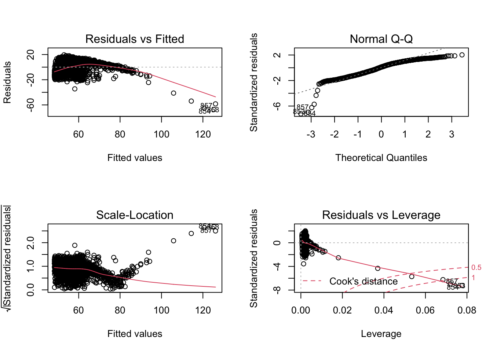
5.6.1 Multiple is the formula, not the predictor
The linearity of a model is in how the predictive variables are put together, not necessarily in the predictors themselves. In the last exercise, you saw that gdpPercap is not the best predictor of lifeExp because it does not seem to fit linearly. This carries forward into our multiple linear regression as is apparent in the last plot.
One way to improve our model is to use a transformed gdpPercap predictor. But transformed how?
Let’s pick a (silly) function to start. Here, we take the sine of the gdpPercap.
gapminder %>%
ggplot(aes(x = sin(gdpPercap), y = lifeExp)) +
geom_point()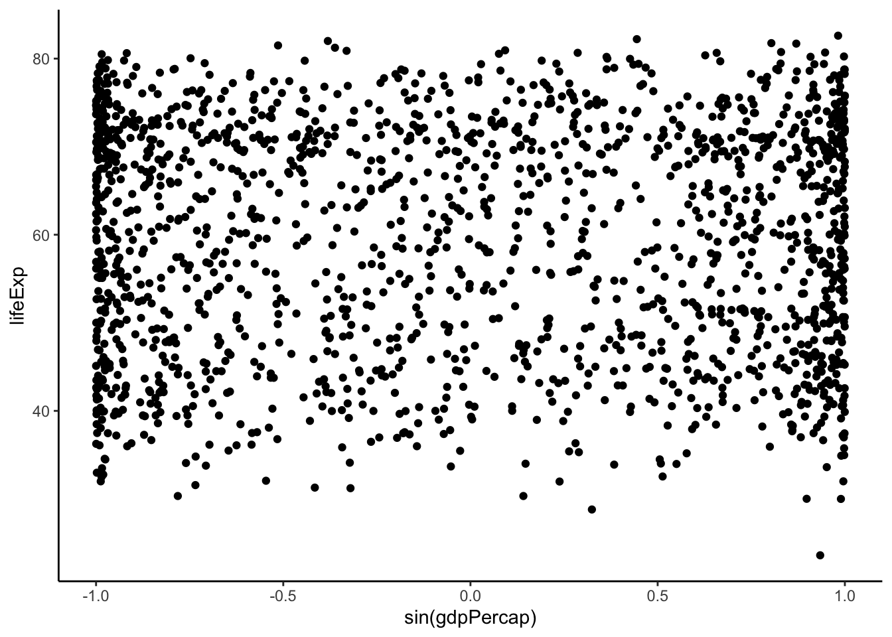
Doesn’t look much better.
5.6.1.1 Exercise: Transforming predictors
- Find a function that makes the plot more “linear” and fit a model of life expectancy as a function of the transformed per-capita gdp. Is it a better model?
- Go back to your original
gdpPercapvs.lifeExpplot and think about what function creates a similar trend.
- Go back to your original
5.6.2 Transforming predictors: log
lifeExp_model3a <- lm(lifeExp ~ year + log(gdpPercap),
data = gapminder)Or we can create a new variable in the data frame and use that variable in the model
gapminder <- gapminder %>%
mutate(log_gdp = log(gdpPercap))
lifeExp_model3b <- lm(lifeExp ~ year + log_gdp,
data = gapminder)Both yield the same result.
summary(lifeExp_model3a)##
## Call:
## lm(formula = lifeExp ~ year + log(gdpPercap), data = gapminder)
##
## Residuals:
## Min 1Q Median 3Q Max
## -27.2291 -3.8454 0.6065 4.7737 17.8644
##
## Coefficients:
## Estimate Std. Error t value Pr(>|t|)
## (Intercept) -3.911e+02 1.942e+01 -20.14 <2e-16 ***
## year 1.956e-01 9.927e-03 19.70 <2e-16 ***
## log(gdpPercap) 7.770e+00 1.381e-01 56.27 <2e-16 ***
## ---
## Signif. codes: 0 '***' 0.001 '**' 0.01 '*' 0.05 '.' 0.1 ' ' 1
##
## Residual standard error: 6.877 on 1701 degrees of freedom
## Multiple R-squared: 0.7169, Adjusted R-squared: 0.7165
## F-statistic: 2153 on 2 and 1701 DF, p-value: < 2.2e-16summary(lifeExp_model3b)##
## Call:
## lm(formula = lifeExp ~ year + log_gdp, data = gapminder)
##
## Residuals:
## Min 1Q Median 3Q Max
## -27.2291 -3.8454 0.6065 4.7737 17.8644
##
## Coefficients:
## Estimate Std. Error t value Pr(>|t|)
## (Intercept) -3.911e+02 1.942e+01 -20.14 <2e-16 ***
## year 1.956e-01 9.927e-03 19.70 <2e-16 ***
## log_gdp 7.770e+00 1.381e-01 56.27 <2e-16 ***
## ---
## Signif. codes: 0 '***' 0.001 '**' 0.01 '*' 0.05 '.' 0.1 ' ' 1
##
## Residual standard error: 6.877 on 1701 degrees of freedom
## Multiple R-squared: 0.7169, Adjusted R-squared: 0.7165
## F-statistic: 2153 on 2 and 1701 DF, p-value: < 2.2e-165.6.3 Transforming predictors: polynomial
Another option is using a polynomial transformation of our model.
lifeExp_model4 <- lm(lifeExp ~ year + poly(gdpPercap),
data = gapminder)
summary(lifeExp_model4)##
## Call:
## lm(formula = lifeExp ~ year + poly(gdpPercap), data = gapminder)
##
## Residuals:
## Min 1Q Median 3Q Max
## -67.262 -6.954 1.219 7.759 19.553
##
## Coefficients:
## Estimate Std. Error t value Pr(>|t|)
## (Intercept) -413.59192 27.65674 -14.95 <2e-16 ***
## year 0.23898 0.01397 17.11 <2e-16 ***
## poly(gdpPercap) 272.44154 9.95433 27.37 <2e-16 ***
## ---
## Signif. codes: 0 '***' 0.001 '**' 0.01 '*' 0.05 '.' 0.1 ' ' 1
##
## Residual standard error: 9.694 on 1701 degrees of freedom
## Multiple R-squared: 0.4375, Adjusted R-squared: 0.4368
## F-statistic: 661.4 on 2 and 1701 DF, p-value: < 2.2e-16Or explicit write a polynomial equation for one of our predictor.
lifeExp_model5 <- lm(lifeExp ~ year + gdpPercap + I(gdpPercap^2),
data = gapminder)
summary(lifeExp_model5)##
## Call:
## lm(formula = lifeExp ~ year + gdpPercap + I(gdpPercap^2), data = gapminder)
##
## Residuals:
## Min 1Q Median 3Q Max
## -31.1048 -6.3211 0.3511 6.8441 25.7228
##
## Coefficients:
## Estimate Std. Error t value Pr(>|t|)
## (Intercept) -3.088e+02 2.426e+01 -12.73 <2e-16 ***
## year 1.819e-01 1.228e-02 14.81 <2e-16 ***
## gdpPercap 1.396e-03 3.671e-05 38.02 <2e-16 ***
## I(gdpPercap^2) -1.344e-08 5.558e-10 -24.18 <2e-16 ***
## ---
## Signif. codes: 0 '***' 0.001 '**' 0.01 '*' 0.05 '.' 0.1 ' ' 1
##
## Residual standard error: 8.364 on 1700 degrees of freedom
## Multiple R-squared: 0.5814, Adjusted R-squared: 0.5807
## F-statistic: 787.1 on 3 and 1700 DF, p-value: < 2.2e-16Note that we must use I(gdpPercap^2) instead of gdpPercap^2 because the symbols ^, *, and : have a particular meaning in a linear model. As we saw in ANOVA, these symbols are used to specify interactions between predicting variables.
5.6.3.1 Exercise: Multiple linear regression
- So far, we have worked with
lifeExpas our independent variable. Now, in small groups, try to produce a model of population (pop) using one or more of the variables available ingapminder.
If you are attending a 3 x 2-hour workshop, this is the end of day 2
5.6.4 Interactions and ANalysis of COVArianvce (ANCOVA)
So far, our models for life expectancy have built upon continuous (or discrete but incremental) variables. However, we may wonder if being in one continent rather than another has a differential effect on the correlation between year and lifeExp.
Let’s take a look at our data set now with continent in mind.
gapminder %>%
ggplot(aes(x = year, y = lifeExp, colour = continent)) +
geom_point() +
geom_smooth(method = "lm", se= FALSE) +
labs(y="Life expectancy (yrs)")## `geom_smooth()` using formula 'y ~ x'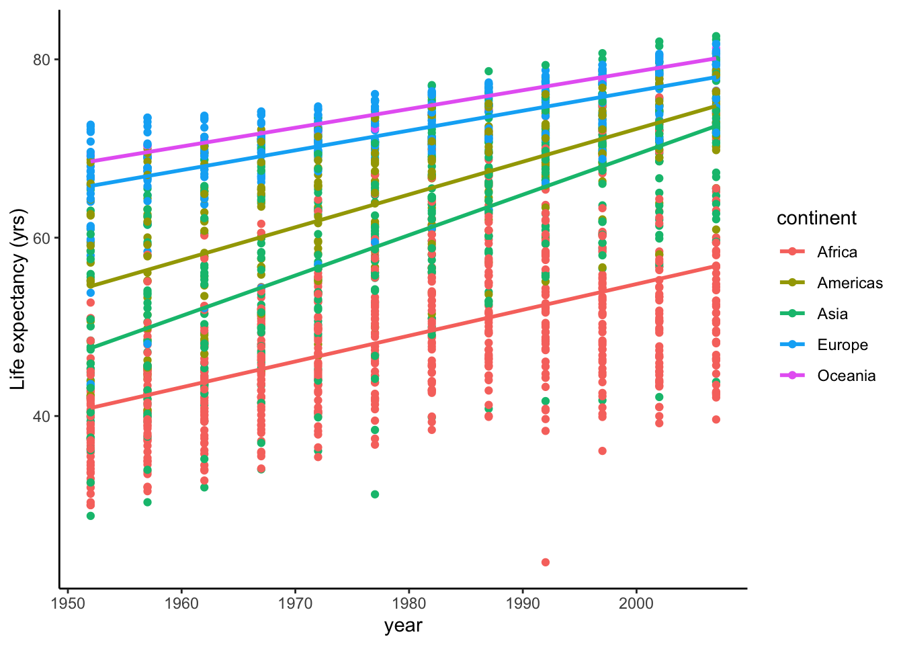
The slopes for each continent seem different, but how can we tell if the difference is significant? Here’s where we can combine our linear model with the ANOVA function we learned earlier!
First, using the special character *, we model the effects of year, continent, and their interaction on life expectancy.
lifeExp_model6 <- lm(lifeExp ~ year*continent,
data = gapminder)Then, we call the ANOVA function aov() on the model:
summary(aov(lifeExp_model6))## Df Sum Sq Mean Sq F value Pr(>F)
## year 1 53919 53919 1046.0 < 2e-16 ***
## continent 4 139343 34836 675.8 < 2e-16 ***
## year:continent 4 3566 892 17.3 6.46e-14 ***
## Residuals 1694 87320 52
## ---
## Signif. codes: 0 '***' 0.001 '**' 0.01 '*' 0.05 '.' 0.1 ' ' 1Based on these results, it really seems that the continent should have a role in the model. However, it is not always like this. Let’s take a closer look at Europe and Oceania.
gapminder %>%
filter(continent %in% c("Oceania","Europe")) %>%
lm(lifeExp ~ year*continent, data = .) %>%
aov() %>%
summary()## Df Sum Sq Mean Sq F value Pr(>F)
## year 1 5598 5598 399.070 < 2e-16 ***
## continent 1 132 132 9.414 0.00231 **
## year:continent 1 1 1 0.065 0.79895
## Residuals 380 5330 14
## ---
## Signif. codes: 0 '***' 0.001 '**' 0.01 '*' 0.05 '.' 0.1 ' ' 1Note that this is an example of how the tidyverse can be used to link together a bunch of functions, instead of creating many new R objects as we’ve been doing thus far.
When just looking at Oceania and Europe, continent has a significant effect on the intercept of the model, but not on its slope. This makes sense since in our plot, these lines (blue and purple) appear parallel but with different y-intercepts.
5.7 Linear Mixed Effects models
5.7.1 Motivations for LME
Let’s take a look at the esoph data set, which comes pre-downloaded in R. These data contain information on smoking, alcoholism, and (o)esophageal cancer. Specifically, we are interested in if the number of controls ncontrols affects the number of cases ncases of cancer for each age group agegp.
Here’s what the data look like (with a tad bit of vertical jitter):
p <- ggplot(esoph, aes(ncontrols, ncases, group=agegp, colour=agegp)) +
geom_jitter(height=0.25) +
scale_colour_discrete("Age Group") +
ylab("Number of Cases") + xlab("Number of Controls")
p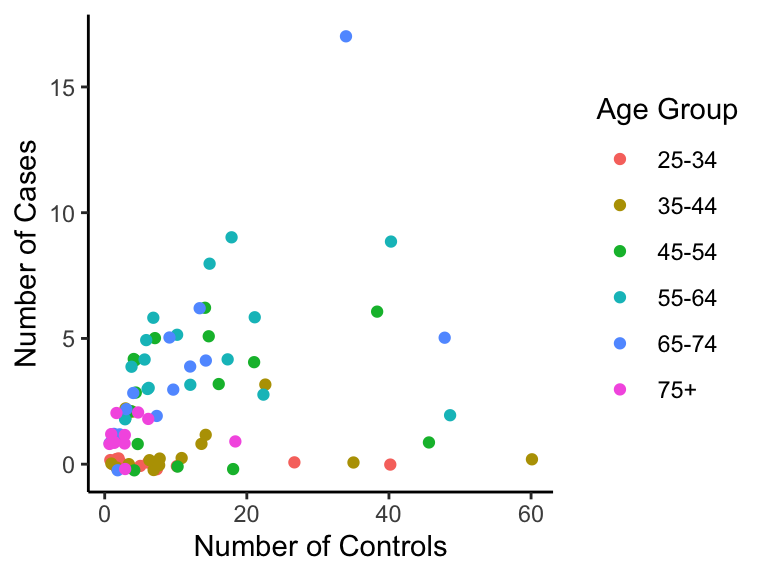
It seems each age group has a different relationship. Should we then fit regression lines for each group separately? Here’s what we get, if we do.
p + geom_smooth(method="lm", se=FALSE, size=0.5)## `geom_smooth()` using formula 'y ~ x'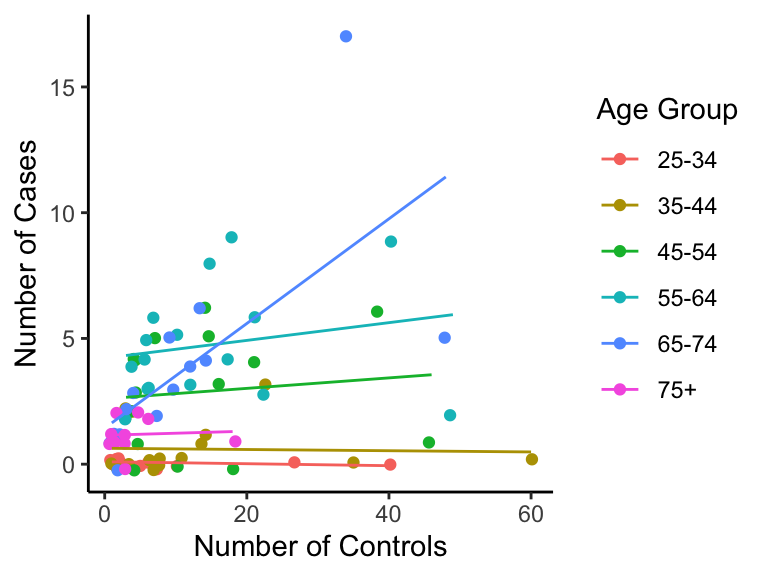
But each group has so few observations which makes the regression less powerful.
esoph %>%
group_by(agegp) %>%
dplyr::summarise(n=length(ncases)) %>%
as.data.frame## agegp n
## 1 25-34 15
## 2 35-44 15
## 3 45-54 16
## 4 55-64 16
## 5 65-74 15
## 6 75+ 11Question: can we borrow information across groups to strengthen regression, while still allowing each group to have its own regression line?
Yes – we can use Linear Mixed Effects (LME) models. An LME model is just a linear regression model for each group, with different slopes and intercepts, but the collection of slopes and intercepts is assumed to come from some normal distribution.
5.7.2 Definitions
With one predictor (\(X\)), we can write an LME as follows: \[ Y = \left(\beta_0 + b_0\right) + \left(\beta_1 + b_1\right) X + \varepsilon, \] where the error term \(\varepsilon\) has mean zero, and the \(b_0\) and \(b_1\) terms are normally distributed having a mean of zero, and some unknown variances and correlation. The \(b_0\) and \(b_1\) terms indicate group-to-group differences from average.
The \(\beta\) terms are called the fixed effects, and the \(b\) terms are called the random effects. Since the model has both types of effects, it’s said to be a mixed model – hence the name of “LME.”
Note that we don’t have to make both the slope and intercept random. For example, we can remove the \(b_0\) term, which would mean that each group is forced to have the same (fixed) intercept \(\beta_0\). Also, we can add more predictors (\(X\) variables).
5.7.3 Fitting LME
Two R packages exist for working with mixed effects models: lme4 and nlme. We’ll be using the lme4 package (check out this discussion on Cross Validated for a comparison of the two packages).
Let’s fit the model. Just like our other models we need to give a formula and data.
esoph_model <- lmer(ncases ~ ncontrols + (ncontrols | agegp),
data=esoph)Let’s take a closer look at the formula, which in this case is ncases ~ ncontrols + (ncontrols | agegp).
On the left of the ~ is the response variable, as usual (just like for lm). On the right, we need to specify both the fixed and random effects. The fixed effects part is the same as usual: ncontrols indicates the explanatory variables that get a fixed effect. Then, we need to indicate which explanatory variables get a random effect. The random effects can be indicated in parentheses, separated by +, followed by a |, after which the variable(s) that you wish to group by are indicated. So | can be interpreted as “grouped by.”
Now let’s look at the model output:
summary(esoph_model)## Linear mixed model fit by REML ['lmerMod']
## Formula: ncases ~ ncontrols + (ncontrols | agegp)
## Data: esoph
##
## REML criterion at convergence: 388.6
##
## Scaled residuals:
## Min 1Q Median 3Q Max
## -2.6511 -0.3710 -0.1301 0.3683 4.8056
##
## Random effects:
## Groups Name Variance Std.Dev. Corr
## agegp (Intercept) 1.69426 1.3016
## ncontrols 0.00573 0.0757 0.26
## Residual 3.73290 1.9321
## Number of obs: 88, groups: agegp, 6
##
## Fixed effects:
## Estimate Std. Error t value
## (Intercept) 1.63379 0.59991 2.723
## ncontrols 0.04971 0.03677 1.352
##
## Correlation of Fixed Effects:
## (Intr)
## ncontrols 0.038The random and fixed effects are indicated here.
- Under the “Random effects:” section, we have the variance of each random effect, and the lower part of the correlation matrix of these random effects.
- Under the “Fixed effects:” section, we have the estimates of the fixed effects, as well as the uncertainty in the estimate (indicated by the Std. Error).
We can extract the collection of slopes and intercepts for each group with our handy tidy function.
tidy(esoph_model)## # A tibble: 6 x 6
## effect group term estimate std.error statistic
## <chr> <chr> <chr> <dbl> <dbl> <dbl>
## 1 fixed <NA> (Intercept) 1.63 0.600 2.72
## 2 fixed <NA> ncontrols 0.0497 0.0368 1.35
## 3 ran_pars agegp sd__(Intercept) 1.30 NA NA
## 4 ran_pars agegp cor__(Intercept).ncontrols 0.259 NA NA
## 5 ran_pars agegp sd__ncontrols 0.0757 NA NA
## 6 ran_pars Residual sd__Observation 1.93 NA NAAlternatively, we can use the coef function:
coef(esoph_model)## $agegp
## (Intercept) ncontrols
## 25-34 0.2674414 -0.002916658
## 35-44 0.7227576 -0.001128636
## 45-54 2.2834044 0.036587951
## 55-64 3.5107945 0.064244491
## 65-74 1.8699071 0.171921200
## 75+ 1.1484472 0.029580126
##
## attr(,"class")
## [1] "coef.mer"Let’s put these regression lines on the plot. First, we must extract the relevant slopes and intercepts.
# Put the slopes and intercepts with orignal data
## Exact slopes and intercepts
par_coll <- coef(esoph_model)$agegp %>%
tibble::rownames_to_column()
# Bind to orig data
esoph <- ddply(esoph, ~ agegp, function(df){
pars <- subset(par_coll, rowname==unique(df$agegp))
int <- pars$`(Intercept)`
slp <- pars$ncontrols
cbind(df, intercept=int, slope=slp)
})Then we can add these lines to the plot.
## Plot
ggplot(esoph, aes(ncontrols, ncases, group=agegp, colour=agegp)) +
geom_jitter(height=0.25) +
geom_abline(aes(intercept=intercept, slope=slope, colour=agegp)) +
scale_colour_discrete("Age Group") +
ylab("Number of Cases") + xlab("Number of Controls")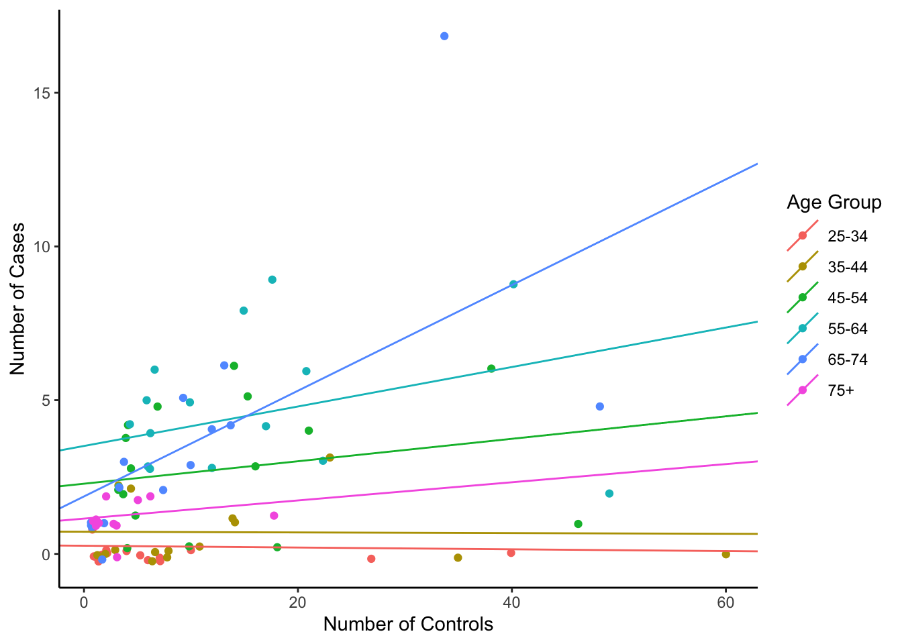
So, each group still gets its own regression line, but tying the parameters together with a normal distribution gives us a more powerful regression.
5.7.3.1 Exercise: LME
Using the
sleepstudydataset, fit an LME on Reaction against Days, grouped by Subject.What is the intercept and slope of subject #310 in the model from question 1?
CHALLENGE. Using the Teams dataset from the
Lahmanpackage, fit a model on runs (R) from the variables ‘walks’ (BB) and ‘Hits’ (H), grouped by team (teamID).- Hint: wrap the scale function around each predictor variable.
5.8 Generalized Linear models
In the linear models discussed so far, we always assumed that the response can take any numeric value or at least any numeric value in a large range.
However, we often have response data that does not quite fit this assumption. This includes, for instance, count data that can only take non-negative integer values (i.e. 0, 1, 2, 3, …). Another example is binary data, where the response can take only one of two values (e.g. yes/no, low/high, 0/1, etc.).
5.8.1 Definition
Generalized Linear Models (GLMs) are exactly what their name suggests, a generalization of linear models introduced to different kinds of data. With GLMs, we want to model the mean \(\mu\) (or rather a function called link) of the assumed distribution as a linear function of some covariates.
The model can be written as \[ g(\mu) = \beta_0 + \beta_1 x_1 + \beta_2 x_2 + \cdots + \beta_p x_p \] and we want to estimate the parameters \(\beta_0\) to \(\beta_p\) for the \(p\) covariates from the available data.
The choice of the distribution is guided by the type of the response data (and the limited set of distributions for GLMs). The link function \(g()\) is needed to convert the mean of the assumed distribution into a linear function of the model parameters, but it also makes it more difficult to interpret the parameters. The distributions usually have a “natural” link function, but other choices would be available too.
Before we discuss this in more detail, let’s see how we can actually fit a GLM in R.
5.8.2 Fitting GLMs
To fit a generalized linear model in R, we use the function glm which works very similarly to the already known lm function. However, it allows us to specify the distribution we want to use via the argument family. Each family comes with a default link function. The help page for ?family lists all supported types of GLMs. We explore some of them below.
5.8.3 Logistic regression (family = binomial)
We will first discuss the case of binary response data (e.g. no/yes, 0/1, failure/success, …). Oftentimes, we are interested in the probability of a success under certain circumstances, i.e. we want to model the success probability given a set of covariates.
The natural choice for this kind of data is to use the Binomial distribution. This distribution corresponds to the number of successes in \(m\) trials, if each trial is independent and has the same success probability. Binary data can be thought of as a single trial (i.e. \(m = 1\)). The mean of the Binomial distribution is the success probability \(p\) and the usual link function is the log of the odds.
This gives us the logistic regression model: \[ \log \left( \frac{p}{1 - p} \right) = \beta_0 + \beta_1 x_1 + \beta_2 x_2 + \cdots + \beta_p x_p \]
Importantly, each trial needs to be independent and must have the same success probability!
As a first example, we will try logistic regression on the UC Berkeley Admission data (UCBAdmissions, pre-installed in R). We want to model log odds of being admitted, using the biological sex (incorrectly attributed as gender in the data set) of the applicant and the department as covariates.
Note: The data set does not contain one row per applicant, but rather has the number of applications that fall in each of the possible combinations. This can be easily used in R via the weights argument to glm.
# Load and format data
ucb <- as.data.frame(UCBAdmissions) %>%
dplyr::rename(sex=Gender)
# Fit GLM binomial
ucb_model <- glm(Admit ~ sex * Dept,
data = ucb,
family = binomial,
weights = Freq)
summary(ucb_model)##
## Call:
## glm(formula = Admit ~ sex * Dept, family = binomial, data = ucb,
## weights = Freq)
##
## Deviance Residuals:
## Min 1Q Median 3Q Max
## -22.1022 -15.6975 0.3243 13.0256 24.6314
##
## Coefficients:
## Estimate Std. Error z value Pr(>|z|)
## (Intercept) -0.49212 0.07175 -6.859 6.94e-12 ***
## sexFemale -1.05208 0.26271 -4.005 6.21e-05 ***
## DeptB -0.04163 0.11319 -0.368 0.71304
## DeptC 1.02764 0.13550 7.584 3.34e-14 ***
## DeptD 1.19608 0.12641 9.462 < 2e-16 ***
## DeptE 1.44908 0.17681 8.196 2.49e-16 ***
## DeptF 3.26187 0.23120 14.109 < 2e-16 ***
## sexFemale:DeptB 0.83205 0.51039 1.630 0.10306
## sexFemale:DeptC 1.17700 0.29956 3.929 8.53e-05 ***
## sexFemale:DeptD 0.97009 0.30262 3.206 0.00135 **
## sexFemale:DeptE 1.25226 0.33032 3.791 0.00015 ***
## sexFemale:DeptF 0.86318 0.40267 2.144 0.03206 *
## ---
## Signif. codes: 0 '***' 0.001 '**' 0.01 '*' 0.05 '.' 0.1 ' ' 1
##
## (Dispersion parameter for binomial family taken to be 1)
##
## Null deviance: 6044.3 on 23 degrees of freedom
## Residual deviance: 5167.3 on 12 degrees of freedom
## AIC: 5191.3
##
## Number of Fisher Scoring iterations: 6The summary of the glm output shows us the value of each of the parameters as well as whether they are significantly different from 0. However, since our covariates are categorical, each of the two are reflected by multiple parameters (one for each “level” and combination of levels).
With the Anova function from the package car, we can check the significance of each of the two covariates as a whole.
Anova(ucb_model)## Analysis of Deviance Table (Type II tests)
##
## Response: Admit
## LR Chisq Df Pr(>Chisq)
## sex 1.53 1 0.215928
## Dept 763.40 5 < 2.2e-16 ***
## sex:Dept 20.20 5 0.001144 **
## ---
## Signif. codes: 0 '***' 0.001 '**' 0.01 '*' 0.05 '.' 0.1 ' ' 1This tells us that sex by itself has no significant effect on the log-odds of being admitted, but the interaction effect with the department seems to be important. Hence, we can not remove any of the covariates without significantly degrading the fit.
drop1(ucb_model, test = "Chisq")## Single term deletions
##
## Model:
## Admit ~ sex * Dept
## Df Deviance AIC LRT Pr(>Chi)
## <none> 5167.3 5191.3
## sex:Dept 5 5187.5 5201.5 20.204 0.001144 **
## ---
## Signif. codes: 0 '***' 0.001 '**' 0.01 '*' 0.05 '.' 0.1 ' ' 1In GLMs with a link function (as in logistic regression), the interpretation of the parameters can be tricky. The sign of the parameter (i.e. is it positive or negative) can be interpreted as whether the covariate increases (“+”) or decreases (“-”) the odds, and hence, the probability of success. Also, the relative magnitudes tell you which covariate increases/decreases the probability more. However, the magnitude itself is not directly interpretable, i.e. you can not say “the probability of being admitted is 1.05 less for females than for males.”
We can make statements about the probabilities themselves. The lsmeans function provides a nice overview of the fitted “success” (in our case “being admitted”) probabilities for the different combinations of the predictors, including a confidence interval.
ucb_model_sum <- lsmeans(ucb_model, ~ sex + Dept, type = "response")
ucb_model_sum## sex Dept prob SE df asymp.LCL asymp.UCL
## Male A 0.379 0.0169 Inf 0.347 0.413
## Female A 0.176 0.0366 Inf 0.115 0.259
## Male B 0.370 0.0204 Inf 0.331 0.410
## Female B 0.320 0.0933 Inf 0.169 0.522
## Male C 0.631 0.0268 Inf 0.577 0.682
## Female C 0.659 0.0195 Inf 0.620 0.696
## Male D 0.669 0.0230 Inf 0.622 0.713
## Female D 0.651 0.0246 Inf 0.601 0.697
## Male E 0.723 0.0324 Inf 0.655 0.781
## Female E 0.761 0.0215 Inf 0.716 0.800
## Male F 0.941 0.0122 Inf 0.912 0.961
## Female F 0.930 0.0139 Inf 0.897 0.952
##
## Confidence level used: 0.95
## Intervals are back-transformed from the logit scaleThis summary can also be grouped by one of the predictors, e.g. by the department.
summary(ucb_model_sum, by = "Dept")## Dept = A:
## sex prob SE df asymp.LCL asymp.UCL
## Male 0.379 0.0169 Inf 0.347 0.413
## Female 0.176 0.0366 Inf 0.115 0.259
##
## Dept = B:
## sex prob SE df asymp.LCL asymp.UCL
## Male 0.370 0.0204 Inf 0.331 0.410
## Female 0.320 0.0933 Inf 0.169 0.522
##
## Dept = C:
## sex prob SE df asymp.LCL asymp.UCL
## Male 0.631 0.0268 Inf 0.577 0.682
## Female 0.659 0.0195 Inf 0.620 0.696
##
## Dept = D:
## sex prob SE df asymp.LCL asymp.UCL
## Male 0.669 0.0230 Inf 0.622 0.713
## Female 0.651 0.0246 Inf 0.601 0.697
##
## Dept = E:
## sex prob SE df asymp.LCL asymp.UCL
## Male 0.723 0.0324 Inf 0.655 0.781
## Female 0.761 0.0215 Inf 0.716 0.800
##
## Dept = F:
## sex prob SE df asymp.LCL asymp.UCL
## Male 0.941 0.0122 Inf 0.912 0.961
## Female 0.930 0.0139 Inf 0.897 0.952
##
## Confidence level used: 0.95
## Intervals are back-transformed from the logit scaleSimilarly, we can get the odds ratio between males and females in each department. This basically tells us how different the odds are between male and female applicants in each department.
contrast(ucb_model_sum, "pairwise", by = "Dept")## Dept = A:
## contrast odds.ratio SE df z.ratio p.value
## Male / Female 2.864 0.752 Inf 4.005 0.0001
##
## Dept = B:
## contrast odds.ratio SE df z.ratio p.value
## Male / Female 1.246 0.545 Inf 0.503 0.6151
##
## Dept = C:
## contrast odds.ratio SE df z.ratio p.value
## Male / Female 0.883 0.127 Inf -0.868 0.3855
##
## Dept = D:
## contrast odds.ratio SE df z.ratio p.value
## Male / Female 1.085 0.163 Inf 0.546 0.5852
##
## Dept = E:
## contrast odds.ratio SE df z.ratio p.value
## Male / Female 0.819 0.164 Inf -1.000 0.3174
##
## Dept = F:
## contrast odds.ratio SE df z.ratio p.value
## Male / Female 1.208 0.369 Inf 0.619 0.5359
##
## Tests are performed on the log odds ratio scaleThis tells us that sex seems to make a significant difference in Department \(A\) but not so in the other departments. This, in turn, causes the significant interaction effect we saw before.
5.8.3.1 Exercise: Logistic GLM
In the plasma data (from the
HSAUR3package), use logistic regression to estimate the probabilities of ESR > 20, given the level of fibrinogen in the blood.Using the
womensroledata set from theHSAUR3package, try to fit a logistic regression to the agreement with the statement, given the years of education and the respondent’s sex (also attributed asgenderin these data).
5.8.4 Count data (family = poisson)
When we are dealing with count data, the Poisson distribution is often used as a model. The Poisson distribution models the number of events during a fixed period of time (or space, etc.). It is completely characterized by the rate parameter \(\mu\). Both the mean and the variance of the Poisson distribution are equal to the rate parameter. In other words, a larger rate also implies a larger spread of the data. This is a rather strong assumption and we will learn how to check if this assumption is reasonable for a given data set. The usual link function for Poisson GLMs is the log, so our GLM for the rate \(\mu\) is: \[ \log (\mu) = \beta_0 + \beta_1 x_1 + \beta_2 x_2 + \cdots + \beta_p x_p. \]
Let’s use this model on the polyps data set (pre-installed). We want to explain the number of colonic polyps at 12 months by means of the age of the patient and whether they are in the treatment group.
polyps_model1 <- glm(number ~ treat + age,
data = polyps,
family = poisson)
summary(polyps_model1)##
## Call:
## glm(formula = number ~ treat + age, family = poisson, data = polyps)
##
## Deviance Residuals:
## Min 1Q Median 3Q Max
## -4.2212 -3.0536 -0.1802 1.4459 5.8301
##
## Coefficients:
## Estimate Std. Error z value Pr(>|z|)
## (Intercept) 4.529024 0.146872 30.84 < 2e-16 ***
## treatdrug -1.359083 0.117643 -11.55 < 2e-16 ***
## age -0.038830 0.005955 -6.52 7.02e-11 ***
## ---
## Signif. codes: 0 '***' 0.001 '**' 0.01 '*' 0.05 '.' 0.1 ' ' 1
##
## (Dispersion parameter for poisson family taken to be 1)
##
## Null deviance: 378.66 on 19 degrees of freedom
## Residual deviance: 179.54 on 17 degrees of freedom
## AIC: 273.88
##
## Number of Fisher Scoring iterations: 5We assumed that the mean and the variance are equal. But how close is this assumption to the truth? R supports the “quasi-” family which allows for the variance to be different.
polyps_model2 <- glm(number ~ treat + age,
data = polyps,
family = quasipoisson)
summary(polyps_model2)##
## Call:
## glm(formula = number ~ treat + age, family = quasipoisson, data = polyps)
##
## Deviance Residuals:
## Min 1Q Median 3Q Max
## -4.2212 -3.0536 -0.1802 1.4459 5.8301
##
## Coefficients:
## Estimate Std. Error t value Pr(>|t|)
## (Intercept) 4.52902 0.48106 9.415 3.72e-08 ***
## treatdrug -1.35908 0.38533 -3.527 0.00259 **
## age -0.03883 0.01951 -1.991 0.06284 .
## ---
## Signif. codes: 0 '***' 0.001 '**' 0.01 '*' 0.05 '.' 0.1 ' ' 1
##
## (Dispersion parameter for quasipoisson family taken to be 10.72805)
##
## Null deviance: 378.66 on 19 degrees of freedom
## Residual deviance: 179.54 on 17 degrees of freedom
## AIC: NA
##
## Number of Fisher Scoring iterations: 5The fitted quasi-Poisson model results in dispersion parameter different from 1, which makes the assumption of equal mean and variance highly questionable. If the assumption of equal mean and variance is wrong, the standard errors of the parameters are grossly underestimated. The uncoupling of the mean and the variance does not change the parameter estimates, but the significance of the parameters in the model will be different.
Similarly to logistic regression, we can investigate the difference in the rate between two levels of a categorical covariate:
polyps_model2_sum <- lsmeans(polyps_model2, ~ treat,
type = "response")
contrast(polyps_model2_sum, "pairwise")## contrast ratio SE df z.ratio p.value
## placebo / drug 3.89 1.5 Inf 3.527 0.0004
##
## Tests are performed on the log scaleThe significant (p= \(4.2012649\times 10^{-4}\)) rate.ratio of \(3.8926236\) tells us that the rate of the number of colonic polyps at 12 months for subjects in the placebo group is \(3.8926236\) times higher than for subjects in the treatment group.
5.8.4.1 Exercise: Poisson GLM
- Check which covariates have a significant effect on the response in the model fitted with the Poisson family and with the quasi-Poisson family and compare the results. What do you observe?
5.8.5 Negative binomial model for count data
An over-dispersed Poisson regression model (i.e. fitted with quasi-Poisson) is similar to a Negative Binomial (NB) regression model. This can be fitted with the glm.nb function from the MASS package. For instance, we can model the days absent from school based on the sex of students, their age, ethnic background, and learner status. These data are within quine from this same package.
quine_model <- glm.nb(Days ~ Sex * (Age + Eth * Lrn),
data = quine)
## equivalent to
## quine_model <- glm.nb(Days ~ Sex * Age + Sex * Eth * Lrn, data = quine)
summary(quine_model)##
## Call:
## glm.nb(formula = Days ~ Sex * (Age + Eth * Lrn), data = quine,
## init.theta = 1.597990733, link = log)
##
## Deviance Residuals:
## Min 1Q Median 3Q Max
## -2.8950 -0.8827 -0.2299 0.5669 2.1071
##
## Coefficients:
## Estimate Std. Error z value Pr(>|z|)
## (Intercept) 3.01919 0.29706 10.163 < 2e-16 ***
## SexM -0.47541 0.39550 -1.202 0.229355
## AgeF1 -0.70887 0.32321 -2.193 0.028290 *
## AgeF2 -0.61486 0.37141 -1.655 0.097826 .
## AgeF3 -0.34235 0.32717 -1.046 0.295388
## EthN -0.07312 0.26539 -0.276 0.782908
## LrnSL 0.94358 0.32246 2.926 0.003432 **
## EthN:LrnSL -1.35849 0.37719 -3.602 0.000316 ***
## SexM:AgeF1 -0.01486 0.46225 -0.032 0.974353
## SexM:AgeF2 1.24328 0.46134 2.695 0.007040 **
## SexM:AgeF3 1.49319 0.45337 3.294 0.000989 ***
## SexM:EthN -0.60586 0.36896 -1.642 0.100572
## SexM:LrnSL -0.70467 0.46536 -1.514 0.129966
## SexM:EthN:LrnSL 2.11991 0.58056 3.651 0.000261 ***
## ---
## Signif. codes: 0 '***' 0.001 '**' 0.01 '*' 0.05 '.' 0.1 ' ' 1
##
## (Dispersion parameter for Negative Binomial(1.598) family taken to be 1)
##
## Null deviance: 234.56 on 145 degrees of freedom
## Residual deviance: 167.56 on 132 degrees of freedom
## AIC: 1093
##
## Number of Fisher Scoring iterations: 1
##
##
## Theta: 1.598
## Std. Err.: 0.213
##
## 2 x log-likelihood: -1063.025Anova(quine_model)## Analysis of Deviance Table (Type II tests)
##
## Response: Days
## LR Chisq Df Pr(>Chisq)
## Sex 0.9284 1 0.3352783
## Age 14.9609 3 0.0018503 **
## Eth 16.9573 1 3.823e-05 ***
## Lrn 5.6903 1 0.0170588 *
## Eth:Lrn 2.5726 1 0.1087268
## Sex:Age 19.8297 3 0.0001841 ***
## Sex:Eth 0.6547 1 0.4184372
## Sex:Lrn 1.4965 1 0.2212106
## Sex:Eth:Lrn 12.9647 1 0.0003174 ***
## ---
## Signif. codes: 0 '***' 0.001 '**' 0.01 '*' 0.05 '.' 0.1 ' ' 1From the ANOVA table we see that several terms are not significant, but the highest order term involving any of the four factors is significant. Therefore we cannot remove any terms from the model.
drop1(quine_model, test = "Chisq")## Single term deletions
##
## Model:
## Days ~ Sex * (Age + Eth * Lrn)
## Df Deviance AIC LRT Pr(>Chi)
## <none> 167.56 1091.0
## Sex:Age 3 187.39 1104.8 19.830 0.0001841 ***
## Sex:Eth:Lrn 1 180.52 1102.0 12.965 0.0003174 ***
## ---
## Signif. codes: 0 '***' 0.001 '**' 0.01 '*' 0.05 '.' 0.1 ' ' 1We can use lsmeans to compare groups but the relationships are hard to interpret
because there are high order interaction terms in the model.
quine_model_sum1 <- lsmeans(quine_model, ~ Sex + Eth + Lrn, type = "response")
summary(quine_model_sum1, by = c("Sex", "Eth"))## Sex = F, Eth = A:
## Lrn response SE df asymp.LCL asymp.UCL
## AL 13.50 2.78 Inf 9.01 20.2
## SL 34.68 7.63 Inf 22.53 53.4
##
## Sex = M, Eth = A:
## Lrn response SE df asymp.LCL asymp.UCL
## AL 16.57 3.12 Inf 11.46 24.0
## SL 21.04 5.73 Inf 12.35 35.9
##
## Sex = F, Eth = N:
## Lrn response SE df asymp.LCL asymp.UCL
## AL 12.55 2.49 Inf 8.50 18.5
## SL 8.29 1.87 Inf 5.33 12.9
##
## Sex = M, Eth = N:
## Lrn response SE df asymp.LCL asymp.UCL
## AL 8.40 1.60 Inf 5.78 12.2
## SL 22.85 5.76 Inf 13.94 37.5
##
## Results are averaged over the levels of: Age
## Confidence level used: 0.95
## Intervals are back-transformed from the log scalesummary(quine_model_sum1, by = c("Eth", "Lrn"))## Eth = A, Lrn = AL:
## Sex response SE df asymp.LCL asymp.UCL
## F 13.50 2.78 Inf 9.01 20.2
## M 16.57 3.12 Inf 11.46 24.0
##
## Eth = N, Lrn = AL:
## Sex response SE df asymp.LCL asymp.UCL
## F 12.55 2.49 Inf 8.50 18.5
## M 8.40 1.60 Inf 5.78 12.2
##
## Eth = A, Lrn = SL:
## Sex response SE df asymp.LCL asymp.UCL
## F 34.68 7.63 Inf 22.53 53.4
## M 21.04 5.73 Inf 12.35 35.9
##
## Eth = N, Lrn = SL:
## Sex response SE df asymp.LCL asymp.UCL
## F 8.29 1.87 Inf 5.33 12.9
## M 22.85 5.76 Inf 13.94 37.5
##
## Results are averaged over the levels of: Age
## Confidence level used: 0.95
## Intervals are back-transformed from the log scalequine_model_sum2 <- lsmeans(quine_model, ~ Sex + Age, type = "response")
summary(quine_model_sum2, by = "Sex")## Sex = F:
## Age response SE df asymp.LCL asymp.UCL
## F0 22.53 6.11 Inf 13.23 38.35
## F1 11.09 1.73 Inf 8.16 15.06
## F2 12.18 2.68 Inf 7.92 18.74
## F3 16.00 3.70 Inf 10.16 25.19
##
## Sex = M:
## Age response SE df asymp.LCL asymp.UCL
## F0 12.36 2.58 Inf 8.21 18.60
## F1 5.99 1.49 Inf 3.68 9.76
## F2 23.16 4.26 Inf 16.15 33.22
## F3 39.05 9.80 Inf 23.88 63.87
##
## Results are averaged over the levels of: Eth, Lrn
## Confidence level used: 0.95
## Intervals are back-transformed from the log scalesummary(quine_model_sum2, by = "Age")## Age = F0:
## Sex response SE df asymp.LCL asymp.UCL
## F 22.53 6.11 Inf 13.23 38.35
## M 12.36 2.58 Inf 8.21 18.60
##
## Age = F1:
## Sex response SE df asymp.LCL asymp.UCL
## F 11.09 1.73 Inf 8.16 15.06
## M 5.99 1.49 Inf 3.68 9.76
##
## Age = F2:
## Sex response SE df asymp.LCL asymp.UCL
## F 12.18 2.68 Inf 7.92 18.74
## M 23.16 4.26 Inf 16.15 33.22
##
## Age = F3:
## Sex response SE df asymp.LCL asymp.UCL
## F 16.00 3.70 Inf 10.16 25.19
## M 39.05 9.80 Inf 23.88 63.87
##
## Results are averaged over the levels of: Eth, Lrn
## Confidence level used: 0.95
## Intervals are back-transformed from the log scale5.8.5.1 Exercise: Quasi-Poisson vs. negative binomial GLM
- Fit the above model with a quasi-Poisson family and check the over-dispersion in that fit. Is there a difference in the significance of any terms compared to the NB model? Would a Poisson model be appropriate as well?
5.9 Survey
Please provide us with feedback through this short survey.